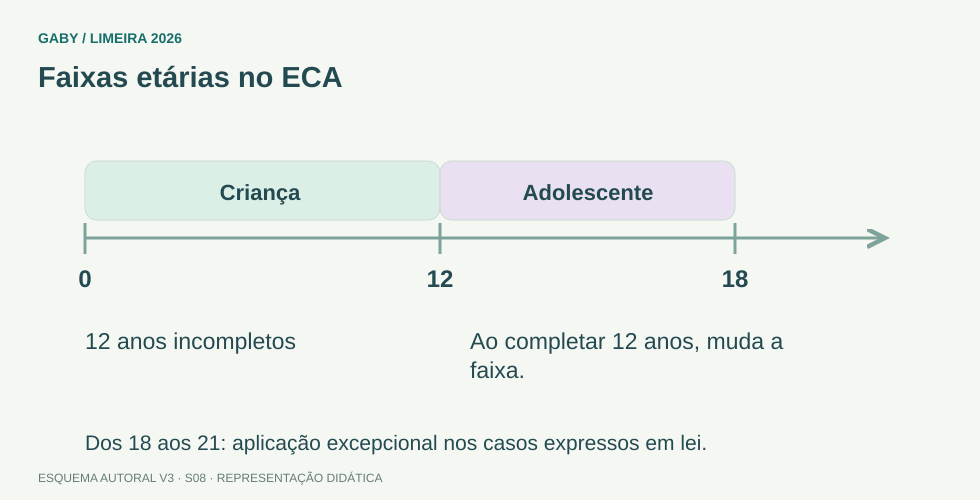

Objetivos do módulo
- Estudar os artigos do ECA expressamente delimitados pelo edital.
- Compreender proteção integral, prioridade absoluta e condição peculiar de pessoa em desenvolvimento.
- Dominar direitos educacionais dos arts. 53 a 59 e deveres escolares relevantes.
- Reconhecer regras básicas de profissionalização e proteção no trabalho dos arts. 60 a 69.
- Aplicar as alterações recentes do ECA (Leis 15.240/2025 e 15.512/2026) aos arts. 4º, 5º, 56 e 58.
- Saber quando e como a escola comunica casos ao Conselho Tutelar (arts. 13 e 56) e o papel da secretaria.
- Distinguir as regras do art. 59-A sobre certidões de antecedentes dos colaboradores.
Faixas etárias no ECA

Descrição em texto do esquema
- Antes de 12 anos: Criança: até 12 anos incompletos.
- Dos 12 aos 18: Adolescente, segundo o art. 2º.
- Exceção legal: Aplicação entre 18 e 21 em casos expressos.
Oficina visual · aplique o esquema
Uma pessoa completou 12 anos hoje. Para o ECA, ela ainda é criança? Explique.
Atividade autoral complementar da V3. Registre sua resposta; a resolução está no arquivo de gabarito e revisão.
Mapa do conteúdo
1. Arts. 1º a 6º - proteção integral
O ECA adota a doutrina da proteção integral. Criança, para efeitos do Estatuto, é a pessoa até 12 anos incompletos; adolescente é aquela entre 12 e 18 anos. Em casos expressos em lei, o Estatuto pode aplicar-se excepcionalmente às pessoas entre 18 e 21 anos.
Crianças e adolescentes são titulares de direitos fundamentais e devem receber oportunidades e facilidades para desenvolvimento físico, mental, moral, espiritual e social em condições de liberdade e dignidade.
| Conceito | Regra |
|---|---|
| Criança | Até 12 anos incompletos. |
| Adolescente | De 12 a 18 anos. |
| Proteção | Integral. |
| Interpretação | Considera fins sociais, bem comum, direitos/deveres e condição peculiar de pessoa em desenvolvimento. |
A quem o ECA se aplica
O ECA é a Lei federal 8.069, de 13 de julho de 1990. É lei nacional: obriga a União, os Estados, o Distrito Federal e os Municípios, as escolas públicas e particulares, as famílias e as entidades. Vale, portanto, para as escolas da rede municipal de Limeira e para o trabalho da secretaria escolar. Regimentos escolares e normas locais devem respeitá-lo.
Arts. 1º a 3º e 6º, dispositivo por dispositivo
| Dispositivo | O que determina | Como cai |
|---|---|---|
| Art. 1º | Declara o objeto da lei: a proteção integral à criança e ao adolescente. | Pergunta a orientação geral do Estatuto. Resposta: proteção integral, para todas as crianças e adolescentes. Alternativas que reduzem o ECA a punição ou a um grupo de renda estão erradas. |
| Art. 2º, caput | Criança: pessoa até doze anos de idade incompletos. Adolescente: pessoa entre doze e dezoito anos de idade. | Troca de “incompletos” por “completos”. No dia em que faz 12 anos, a pessoa passa a ser adolescente para o ECA. |
| Art. 2º, parágrafo único | Nos casos expressos em lei, o Estatuto se aplica excepcionalmente às pessoas entre 18 e 21 anos de idade. | A exceção não é regra geral: só vale quando a lei prevê. Exemplo de caso expresso: a internação de quem cometeu ato infracional na adolescência termina, no máximo, aos 21 anos (art. 121, § 5º). Faixas como “17 a 22” ou “15 a 20” são distratores. |
| Art. 3º, caput | Criança e adolescente têm todos os direitos fundamentais da pessoa humana, sem prejuízo da proteção integral. A lei e outros meios devem garantir oportunidades e facilidades para o desenvolvimento físico, mental, moral, espiritual e social, em condições de liberdade e de dignidade. | Lacuna com os cinco aspectos do desenvolvimento. Alternativas com “econômico e financeiro”, “acadêmico e profissional” ou só “físico e mental” estão erradas. |
| Art. 3º, parágrafo único (incluído pela Lei 13.257/2016) | Os direitos valem para todas as crianças e adolescentes, sem discriminação de nascimento, situação familiar, idade, sexo, raça, etnia ou cor, religião ou crença, deficiência, condição pessoal de desenvolvimento e aprendizagem, condição econômica, ambiente social, região e local de moradia ou outra condição. | Caso escolar em que se tenta reduzir direito por renda, configuração da família, bairro ou dificuldade de aprendizagem: a lei proíbe essa discriminação. |
| Art. 6º | Na interpretação do ECA consideram-se os fins sociais da lei, as exigências do bem comum, os direitos e deveres individuais e coletivos e a condição peculiar da criança e do adolescente como pessoas em desenvolvimento. | Pergunta o critério de interpretação. Resposta: condição peculiar de pessoas em desenvolvimento; não se equipara a criança ao adulto. |
Na escola: numa turma de 6º ano, um aluno de 11 anos é criança e um colega de 13 anos é adolescente. Os direitos educacionais dos arts. 53 a 59-A valem igualmente para os dois.
2. Prioridade absoluta e proteção contra violações
O art. 4º atribui à família, comunidade, sociedade em geral e poder público o dever de assegurar direitos com absoluta prioridade. O texto vigente recebeu alterações recentes, por isso é importante usar fonte atualizada.
O art. 5º veda negligência, discriminação, exploração, violência, crueldade e opressão, responsabilizando atentados aos direitos fundamentais.
Art. 4º: quem deve e o que deve
O caput tem duas listas que caem em prova. Os sujeitos do dever são quatro, ao mesmo tempo: família, comunidade, sociedade em geral e poder público. O dever de um não elimina o dos outros. Os direitos a efetivar com absoluta prioridade são: vida, saúde, alimentação, educação, esporte, lazer, profissionalização, cultura, dignidade, respeito, liberdade, natureza e convivência familiar e comunitária.
| Dispositivo | O que determina | Como cai |
|---|---|---|
| Art. 4º, caput (redação da Lei 15.512/2026) | Dever da família, da comunidade, da sociedade em geral e do poder público de assegurar, com absoluta prioridade, os direitos listados acima. | Alternativa que põe o dever só no professor, só no Estado ou só em quem tem guarda judicial está errada. |
| Art. 4º, § 1º, a | Primazia de receber proteção e socorro em quaisquer circunstâncias. | Socorro não espera documento, pagamento ou conveniência administrativa. Num acidente com transporte escolar, crianças e adolescentes são socorridos primeiro. |
| Art. 4º, § 1º, b | Precedência de atendimento nos serviços públicos ou de relevância pública. | No atendimento de um serviço público, a criança é atendida antes. |
| Art. 4º, § 1º, c | Preferência na formulação e na execução das políticas sociais públicas. | Ao planejar e executar políticas sociais, as voltadas à infância e à juventude têm preferência. |
| Art. 4º, § 1º, d | Destinação privilegiada de recursos públicos nas áreas relacionadas com a proteção à infância e à juventude. | É prioridade no orçamento, não gasto sem regras nem obrigação de pôr todo o orçamento numa única ação. |
| Art. 4º, § 2º (Lei 15.240/2025) | Compete aos pais, além de zelar pelos direitos do art. 3º, prestar aos filhos assistência afetiva, por meio de convívio ou de visitação periódica, que permita acompanhar a formação psicológica, moral e social. | O dever dos pais não se reduz a dinheiro. Pai ou mãe que não mora com o filho presta assistência afetiva pela visitação periódica. |
| Art. 4º, § 3º, I a III (Lei 15.240/2025) | Define assistência afetiva: I, orientação quanto às principais escolhas e oportunidades profissionais, educacionais e culturais; II, solidariedade e apoio nos momentos de intenso sofrimento ou dificuldade; III, presença física espontaneamente solicitada pela criança ou adolescente, quando possível de ser atendida. | Pede um exemplo de assistência afetiva: ajudar o filho a escolher curso ou atividade cultural é o inciso I; humilhar ou isolar é o oposto. |
| Art. 5º, caput | Nenhuma criança ou adolescente será objeto de negligência, discriminação, exploração, violência, crueldade e opressão. Qualquer atentado aos seus direitos fundamentais, por ação ou omissão, é punido na forma da lei. | Afirma-se que só a ação direta conta. Errado: a omissão (deixar de fazer o que era devido) também viola direitos. |
| Art. 5º, parágrafo único (Lei 15.240/2025) | É conduta ilícita, sujeita a reparação de danos, sem prejuízo de outras sanções, a ação ou a omissão que ofenda direito fundamental previsto no ECA, incluídos os casos de abandono afetivo. | O abandono afetivo passou a ser previsto expressamente como ilícito que gera reparação de danos. |
Ação e omissão na prática: bater na criança é ação. Deixar de levá-la a um tratamento de saúde necessário, ou saber de maus-tratos e não comunicar, é omissão. As duas formas estão alcançadas pelo art. 5º. Para memorizar as seis condutas proibidas: negligência, discriminação, exploração, violência, crueldade e opressão.
3. Arts. 53 a 59-A - direito à educação
O art. 53 assegura igualdade de condições para acesso e permanência, respeito pelos educadores, possibilidade de contestar critérios avaliativos com recurso às instâncias escolares superiores, organização e participação em entidades estudantis e acesso à escola pública e gratuita próxima da residência, além de regra de vagas para irmãos na mesma etapa ou ciclo.
Pais ou responsáveis têm direito de ter ciência do processo pedagógico e participar da definição das propostas educacionais. O art. 54 trata do dever do Estado; o art. 55, da obrigação de matrícula pelos pais ou responsável.
Art. 53: finalidades e direitos do estudante
O caput diz para que serve a educação: pleno desenvolvimento da pessoa, preparo para o exercício da cidadania e qualificação para o trabalho. O direito é de toda criança e adolescente, em escola pública ou particular. Os incisos listam o que fica assegurado.
| Dispositivo | O que determina | Como cai |
|---|---|---|
| Art. 53, I | Igualdade de condições para o acesso e a permanência na escola. | Lacuna “acesso e ____ na escola”: permanência. Não basta matricular; é preciso condições para o aluno continuar estudando. |
| Art. 53, II | Direito de ser respeitado por seus educadores. | Respeito é direito, não favor; não depende de nota, comportamento ou pagamento de mensalidade. |
| Art. 53, III | Direito de contestar critérios avaliativos, podendo recorrer às instâncias escolares superiores. | O direito é do estudante. Não é dever da escola nem direito do professor ou do inspetor. Também não garante nota maior nem permite ao aluno alterar a própria nota. |
| Art. 53, IV | Direito de organização e participação em entidades estudantis. | A escola não pode proibir o grêmio estudantil por preferência da direção; também não pode obrigar alguém a se filiar. |
| Art. 53, V (redação da Lei 13.845/2019) | Acesso à escola pública e gratuita, próxima de sua residência, garantindo-se vagas no mesmo estabelecimento a irmãos que frequentem a mesma etapa ou ciclo de ensino da educação básica. | Troca de “educação básica” por “ensino superior” torna a alternativa errada. A vaga conjunta depende de os irmãos estarem na mesma etapa ou ciclo. |
| Art. 53, parágrafo único | É direito dos pais ou responsáveis ter ciência do processo pedagógico e participar da definição das propostas educacionais. | É direito expresso de qualquer pai ou responsável; não depende de ser servidor. Participar não é decidir sozinho no lugar da escola. |
Art. 53-A: prevenção às drogas
Incluído pela Lei 13.840/2019, o art. 53-A dá dever à instituição de ensino, a clubes e agremiações recreativas e a estabelecimentos congêneres: assegurar medidas de conscientização, prevenção e enfrentamento ao uso ou dependência de drogas ilícitas. A prevenção não é tarefa só dos serviços de saúde. A escola tem dever próprio, por exemplo com projetos pedagógicos de prevenção.
Art. 54: deveres do Estado
| Dispositivo | O que determina | Como cai |
|---|---|---|
| Art. 54, I | Ensino fundamental obrigatório e gratuito, inclusive para os que a ele não tiveram acesso na idade própria. | Quem não estudou na idade certa não perde o direito; pode cursar, por exemplo, a educação de jovens e adultos. |
| Art. 54, II | Progressiva extensão da obrigatoriedade e gratuidade ao ensino médio. | Texto original do ECA. Leia com a Constituição atual: o art. 208, I, garante educação básica obrigatória e gratuita dos 4 aos 17 anos (Emenda Constitucional 59/2009). |
| Art. 54, III | Atendimento educacional especializado aos portadores de deficiência (expressão do texto legal), preferencialmente na rede regular de ensino. | A preferência é a rede regular, não centros especializados, modalidade híbrida ou redes comunitárias. |
| Art. 54, IV (redação da Lei 13.306/2016) | Atendimento em creche e pré-escola às crianças de zero a cinco anos de idade. | A Lei 13.306/2016 fixou em cinco anos a idade máxima da educação infantil. Apostilas antigas trazem outra faixa. |
| Art. 54, V | Acesso aos níveis mais elevados do ensino, da pesquisa e da criação artística, segundo a capacidade de cada um. | O critério é a capacidade de cada um. |
| Art. 54, VI | Oferta de ensino noturno regular, adequado às condições do adolescente trabalhador. | Liga educação e trabalho: o adolescente que trabalha deve ter ensino noturno adequado. |
| Art. 54, VII | Atendimento no ensino fundamental por programas suplementares de material didático-escolar, transporte, alimentação e assistência à saúde. | A palavra pedida é “suplementares” (não “condicionais”, “transversais” ou “extracurriculares”). |
| Art. 54, § 1º | O acesso ao ensino obrigatório e gratuito é direito público subjetivo. | É direito que a pessoa pode exigir do poder público. |
| Art. 54, § 2º | O não oferecimento do ensino obrigatório pelo poder público, ou sua oferta irregular, importa responsabilidade da autoridade competente. | A falha do Estado não tira o direito do aluno nem passa a culpa a ele: gera responsabilidade da autoridade competente. |
| Art. 54, § 3º | Compete ao poder público recensear os educandos no ensino fundamental, fazer-lhes a chamada e zelar, junto aos pais ou responsável, pela frequência à escola. | Três ações: recensear (levantar quem está em idade escolar), fazer a chamada (convocar para a matrícula) e zelar pela frequência com a família. O poder público não pode só esperar a procura espontânea. |
Art. 55: dever dos pais
Os pais ou responsável têm a obrigação de matricular seus filhos ou pupilos (quem está sob tutela) na rede regular de ensino. Os deveres se completam: a família matricula; o poder público oferece a vaga, faz a chamada e acompanha a frequência (art. 54). Um dever não elimina o outro.
Art. 56: o que o dirigente comunica ao Conselho Tutelar
| Dispositivo | O que determina | Como cai |
|---|---|---|
| Art. 56, I | Maus-tratos envolvendo seus alunos. | O destinatário é o Conselho Tutelar, não o Ministério Público, a polícia, o juiz ou o Secretário de Educação. |
| Art. 56, II | Reiteração de faltas injustificadas e de evasão escolar, esgotados os recursos escolares. | Antes a escola usa os próprios recursos (contato com a família, convocação, acompanhamento). Esgotados, comunica. |
| Art. 56, III | Elevados níveis de repetência. | Situação escolar expressa; não se naturaliza a repetência em série. |
| Art. 56, IV (incluído pela Lei 15.240/2025) | Negligência, abuso ou abandono na forma prevista nos arts. 4º e 5º. | Hipótese nova: questão que diga que a lei só prevê três casos está desatualizada. |
O art. 56 fala em dirigentes de estabelecimentos de ensino fundamental. Para maus-tratos, porém, a obrigação de comunicar vale para todos (art. 13), inclusive creche e pré-escola. Veja a seção 6.
Arts. 57 a 59: inclusão, cultura, esporte e lazer
| Dispositivo | O que determina | Como cai |
|---|---|---|
| Art. 57 | O poder público estimulará pesquisas, experiências e novas propostas relativas a calendário, seriação, currículo, metodologia, didática e avaliação, para inserir crianças e adolescentes excluídos do ensino fundamental obrigatório. | A finalidade é incluir os excluídos. Inovar não significa abolir a avaliação nem entregar o ensino a terceiros sem controle. |
| Art. 58 (redação da Lei 15.240/2025) | No processo educacional, respeitam-se os valores culturais, morais, éticos, artísticos e históricos próprios do contexto social da criança e do adolescente, garantindo-se a liberdade da criação e o acesso às fontes de cultura. | Educar não é apagar a identidade cultural do aluno nem proibir o acesso à cultura. |
| Art. 59 | Os municípios, com apoio dos estados e da União, estimularão e facilitarão a destinação de recursos e espaços para programações culturais, esportivas e de lazer voltadas para a infância e a juventude. | O protagonista é o Município; Estados e União apoiam. |
Art. 59-A: certidões de antecedentes criminais (Lei 14.811/2024)
| Regra | Quem | O que manter | Prazo expresso |
|---|---|---|---|
| Art. 59-A, caput | Instituições sociais públicas ou privadas que trabalham com crianças e adolescentes e recebem recursos públicos. | Certidões de antecedentes criminais de todos os colaboradores. | Atualização a cada 6 meses. |
| Art. 59-A, parágrafo único | Estabelecimentos educacionais e similares, públicos ou privados, que trabalham com crianças e adolescentes, recebam ou não recursos públicos. | Fichas cadastrais e certidões de antecedentes criminais atualizadas de todos os colaboradores. | O texto exige que estejam atualizadas, sem repetir o prazo de 6 meses do caput. |
Para a escola, vale o parágrafo único: toda escola, pública ou particular, mantém fichas cadastrais e certidões atualizadas dos colaboradores. Na rede municipal, essa guarda pode ficar na unidade ou no setor de pessoal, conforme a organização local.
4. Arts. 60 a 69 - profissionalização e trabalho
O capítulo trata da profissionalização e proteção no trabalho. A aprendizagem é formação técnico-profissional ministrada segundo a legislação educacional. A formação deve garantir acesso e frequência ao ensino regular, atividade compatível com o desenvolvimento e horário especial para seu exercício.
O art. 67 veda ao adolescente trabalho noturno, perigoso, insalubre ou penoso, em locais prejudiciais ao desenvolvimento ou em horários/locais que não permitam frequência à escola. O art. 69 assegura direito à profissionalização e proteção no trabalho, respeitada a condição peculiar de pessoa em desenvolvimento e capacitação profissional adequada.
Esses artigos aparecem em provas mesmo quando o edital destaca o direito à educação. Estude-os de forma objetiva, pela tabela.
| Dispositivo | O que determina | Como cai |
|---|---|---|
| Art. 60 | Proíbe qualquer trabalho a menores de quatorze anos, salvo na condição de aprendiz (o texto remete à Constituição). | Leia com a Constituição, art. 7º, XXXIII: nenhum trabalho antes dos 16 anos, salvo como aprendiz a partir dos 14. |
| Art. 61 | A proteção ao trabalho dos adolescentes é regulada por legislação especial, sem prejuízo do ECA. | O ECA convive com a legislação trabalhista específica. |
| Art. 62 | Aprendizagem é a formação técnico-profissional ministrada segundo as diretrizes e bases da legislação de educação em vigor. | Aprendizagem é formação ligada à legislação educacional, não qualquer tarefa produtiva. |
| Art. 63, I | A formação técnico-profissional garante acesso e frequência obrigatória ao ensino regular. | Programa que tira o adolescente da escola viola o art. 63, I. |
| Art. 63, II e III | Atividade compatível com o desenvolvimento do adolescente e horário especial para o exercício das atividades. | Não se aplicam as mesmas condições de um adulto, sem adaptação. |
| Arts. 64 a 66 | Art. 64: bolsa de aprendizagem ao adolescente até quatorze anos. Art. 65: ao aprendiz maior de quatorze anos, direitos trabalhistas e previdenciários. Art. 66: ao adolescente portador de deficiência, trabalho protegido. | Texto original; cobrado de forma literal. |
| Art. 67, I | Vedado o trabalho noturno, realizado entre as 22h de um dia e as 5h do dia seguinte. | Qualquer parte da jornada dentro desse intervalo é proibida, ainda que o turno seja curto. |
| Art. 67, II e III | Vedado o trabalho perigoso, insalubre ou penoso, e o realizado em locais prejudiciais à formação e ao desenvolvimento físico, psíquico, moral e social. | Salário maior ou autorização informal não afastam a vedação. |
| Art. 67, IV | Vedado o trabalho realizado em horários e locais que não permitam a frequência à escola. | O trabalho se ajusta à escola, nunca o contrário. |
| Art. 68, caput | O programa social baseado em trabalho educativo, sob responsabilidade de entidade governamental ou não governamental sem fins lucrativos, deve assegurar ao adolescente condições de capacitação para atividade regular remunerada. | Quem mantém o programa: entidade governamental ou não governamental sem fins lucrativos. |
| Art. 68, § 1º | Trabalho educativo é a atividade laboral em que as exigências pedagógicas relativas ao desenvolvimento pessoal e social do educando prevalecem sobre o aspecto produtivo. | O pedagógico prevalece sobre o produtivo. Se a produção domina, não é trabalho educativo. |
| Art. 68, § 2º | A remuneração pelo trabalho ou a participação na venda dos produtos não desfigura o caráter educativo. | Receber dinheiro não descaracteriza o trabalho educativo; a prevalência pedagógica continua exigida. |
| Art. 69, I e II | Direito à profissionalização e à proteção no trabalho, observados, entre outros, o respeito à condição peculiar de pessoa em desenvolvimento e a capacitação profissional adequada ao mercado de trabalho. | Os dois aspectos aparecem juntos; conveniência do empregador não é critério. |
As vedações do art. 67 valem para o adolescente empregado, aprendiz, em regime familiar de trabalho, aluno de escola técnica e assistido em entidade governamental ou não governamental. Ser aprendiz não tira a proteção.
Para a escola: o ponto central são os arts. 63, I, e 67, IV. Trabalho ou aprendizagem nunca podem impedir a frequência escolar. Faltas reiteradas de aluno que trabalha seguem o fluxo do art. 56, II.
5. Como lidar com texto legal antigo dentro do ECA
Alguns dispositivos históricos do ECA trazem redações que devem ser lidas em conjunto com a Constituição e legislação posterior. Em prova que peça literalmente o ECA, observe a redação compilada oficial e as remissões (“vide Constituição Federal”).
Não use apostilas antigas como única fonte: o ECA sofreu alterações inclusive em 2025 e 2026.
Alterações que mudam a resposta
| Dispositivo | O que mudou | Norma |
|---|---|---|
| Art. 3º, parágrafo único | Incluída a lista de condições que não podem gerar discriminação. | Lei 13.257/2016 |
| Art. 4º, caput | Incluída a “natureza” entre os direitos com absoluta prioridade. | Lei 15.512/2026 |
| Art. 4º, §§ 1º a 3º | Antigo parágrafo único virou § 1º; incluídos os §§ 2º e 3º (assistência afetiva). | Lei 15.240/2025 |
| Art. 5º, parágrafo único | Incluído: ação ou omissão que ofenda direito fundamental, inclusive abandono afetivo, é ilícita e gera reparação. | Lei 15.240/2025 |
| Art. 13, caput | Redação atual inclui castigo físico e tratamento cruel ou degradante, além de maus-tratos. | Lei 13.010/2014 |
| Art. 53, V | Vagas no mesmo estabelecimento para irmãos da mesma etapa ou ciclo da educação básica. | Lei 13.845/2019 |
| Art. 53-A | Incluído: prevenção ao uso de drogas pelas instituições de ensino. | Lei 13.840/2019 |
| Art. 54, IV | Educação infantil para crianças de zero a cinco anos. | Lei 13.306/2016 |
| Art. 56, IV e art. 58 | Incluído o inciso IV (negligência, abuso ou abandono); nova redação do art. 58. | Lei 15.240/2025 |
| Art. 59-A | Incluído: certidões de antecedentes criminais dos colaboradores. | Lei 14.811/2024 |
| Arts. 60 e 64 | Texto original fala em 14 anos; o próprio ECA remete à Constituição, cujo art. 7º, XXXIII, tem a regra dos 16 anos. | Emenda Constitucional 20/1998 |
6. Comunicação ao Conselho Tutelar: papel da escola e da secretaria
Duas regras do ECA se completam. O art. 13 vale para qualquer pessoa ou serviço e trata de violência contra a criança ou o adolescente. O art. 56 se dirige ao dirigente da escola de ensino fundamental e acrescenta situações escolares, como faltas, evasão e repetência.
Três pontos do art. 13 caem em prova: a comunicação é obrigatória (por isso se fala em notificação compulsória); basta a suspeita, sem esperar confirmação ou prova; o destinatário é o Conselho Tutelar da localidade, sem prejuízo de outras providências. Os parágrafos tratam de outros encaminhamentos: o § 1º manda encaminhar à Justiça da Infância e da Juventude, sem constrangimento, a gestante ou mãe que manifeste interesse em entregar o filho para adoção; o § 2º dá máxima prioridade, nos serviços de saúde, assistência social e demais órgãos do sistema de garantia de direitos, ao atendimento de crianças da primeira infância com suspeita ou confirmação de violência.
Casos de comunicação
| Situação | Base legal | Quando e como |
|---|---|---|
| Suspeita ou confirmação de castigo físico, tratamento cruel ou degradante e maus-tratos | ECA, art. 13; art. 56, I | Desde a suspeita, sem demora. |
| Negligência, abuso ou abandono | ECA, art. 56, IV | Ao identificar o caso. |
| Reiteração de faltas injustificadas e evasão escolar | ECA, art. 56, II | Depois de esgotados os recursos da escola. |
| Elevados níveis de repetência | ECA, art. 56, III | Ao identificar a situação. |
| Alunos com faltas acima de 30% do percentual permitido em lei | LDB (Lei 9.394/1996), art. 12, VIII, a | O estabelecimento envia a relação desses alunos; a LDB não fixa prazo em dias. |
| Violência envolvendo alunos, especialmente automutilações, tentativas de suicídio e suicídios consumados | LDB, art. 12, VIII, b (Lei 15.231/2025) | O estabelecimento comunica as ocorrências e os dados. |
Prazo e responsabilidade
O ECA não fixa prazo em dias para essas comunicações. Para violência e maus-tratos, a obrigação nasce com a suspeita. O art. 70-B exige que as entidades de saúde e educação tenham pessoas capacitadas para reconhecer e comunicar ao Conselho Tutelar suspeitas ou casos de crimes contra crianças e adolescentes. O parágrafo único desse artigo responsabiliza também quem cuida de crianças por cargo ou função e pune o injustificado retardamento ou a omissão, culposos ou dolosos. O art. 245 prevê multa de três a vinte salários de referência (o dobro na reincidência) para o médico, professor ou responsável por estabelecimento de ensino fundamental, pré-escola ou creche que deixar de comunicar à autoridade competente caso de que tenha conhecimento envolvendo suspeita ou confirmação de maus-tratos.
Fluxo na escola
- Acolher e levar à direção. Quem percebe sinais ou ouve um relato acolhe a criança e informa a direção imediatamente. A escola não investiga, não faz mediação com a família suspeita e não espera confirmação: o dever é comunicar.
- Comunicar por escrito. A direção encaminha a comunicação ao Conselho Tutelar da localidade, com identificação do aluno, fatos observados ou relatados e datas, conforme o fluxo da Secretaria Municipal de Educação.
- Apoio da secretaria. A secretaria fornece os dados de matrícula, frequência, contatos e histórico escolar que fundamentam a comunicação, principalmente nos casos de faltas, evasão e repetência. Guarda cópia e protocolo conforme a orientação da rede, com acesso restrito a quem precisa.
- Preservar o aluno. O art. 17 protege a imagem e a identidade da criança, e o art. 18 manda pô-la a salvo de tratamento vexatório ou constrangedor. O caso não é comentado com colegas ou outras famílias.
- Faltas e evasão. A secretaria mantém a frequência em dia e apoia a direção no contato com a família. Esgotados os recursos escolares, a direção comunica o Conselho Tutelar (art. 56, II).
Exemplos resolvidos passo a passo
Exemplo 1
Situação: Questão afirma que criança é a pessoa com até 12 anos completos.
Exemplo 2
Situação: Aluno contesta critério avaliativo e a alternativa diz que o ECA proíbe recurso interno.
Exemplo 3
Situação: Reiteração de faltas injustificadas persiste mesmo após os recursos escolares.
Exemplo 4
Situação: Na matrícula, uma mãe pede a mesma escola para dois filhos: um vai para a pré-escola e o outro para o 4º ano. A escola mais próxima tem vaga só no 4º ano.
Exemplo 5
Situação: Numa escola municipal de educação infantil, a professora nota marcas repetidas no braço de uma criança de 4 anos, que conta que “apanha com o cinto”. A coordenadora sugere chamar os pais para conversar antes de qualquer comunicação.
Exemplo 6
Situação: Um adolescente de 16 anos, aprendiz, recebe escala das 19h às 22h30 às sextas-feiras.
Exemplo 7
Situação: Uma associação conveniada com a prefeitura, que recebe recursos públicos para atender crianças no contraturno, juntou as certidões de antecedentes criminais dos colaboradores em fevereiro. Em setembro, ainda são as mesmas.
Pegadinhas e erros frequentes
- Trocar “12 anos incompletos” por “12 anos completos”.
- Reduzir prioridade absoluta apenas ao poder público.
- Esquecer o direito de contestar critérios avaliativos.
- Comunicar situações sem observar o fluxo legal/escolar aplicável.
- Estudar versão antiga do ECA sem alterações recentes.
- Esquecer a “natureza” no art. 4º (Lei 15.512/2026) ou citar o “parágrafo único” do art. 4º, que hoje é o § 1º.
- Achar que o ECA só pune atentados por ação: a omissão também é alcançada (art. 5º).
- Esperar confirmação para comunicar maus-tratos: a suspeita já obriga (art. 13).
- Comunicar maus-tratos ao Ministério Público, à polícia ou ao Secretário de Educação como se fossem o destinatário do art. 56: é o Conselho Tutelar.
- Esquecer que faltas e evasão (art. 56, II) são comunicadas depois de esgotados os recursos escolares.
- Dizer que contestar critérios avaliativos é dever da escola ou direito do professor: é direito do estudante (art. 53, III).
- Trocar “educação básica” por “ensino superior” na vaga para irmãos (art. 53, V).
- Usar faixa etária antiga para a educação infantil: hoje é de zero a cinco anos (art. 54, IV).
- Aplicar o prazo de 6 meses do art. 59-A, caput, como se estivesse escrito também no parágrafo único.
- Achar que turno curto à noite é permitido, ou que remuneração descaracteriza o trabalho educativo (arts. 67, I, e 68, § 2º).
Resumo de prova
- Criança: até 12 anos incompletos.
- Adolescente: 12 a 18 anos.
- Proteção integral + prioridade absoluta.
- Art. 53: direitos educacionais do aluno.
- Pais/responsáveis têm direito de ciência do processo pedagógico.
- Art. 56: hipóteses de comunicação ao Conselho Tutelar.
- Arts. 60–69: profissionalização e proteção no trabalho.
- Frequência escolar não pode ser inviabilizada pelo trabalho.
- Art. 2º, parágrafo único: 18 a 21 anos só nos casos expressos em lei.
- Art. 4º: família, comunidade, sociedade e poder público; § 1º, a a d: primazia de socorro, precedência, preferência, destinação privilegiada.
- Art. 4º, §§ 2º e 3º: assistência afetiva por convívio ou visitação.
- Art. 5º: ação ou omissão; parágrafo único: abandono afetivo é ilícito.
- Art. 53: pleno desenvolvimento, cidadania, qualificação para o trabalho; incisos I a V.
- Art. 54: fundamental gratuito também fora da idade própria; AEE preferencialmente na rede regular; creche e pré-escola de 0 a 5; programas suplementares.
- Art. 54, §§ 2º e 3º: responsabilidade da autoridade; recensear, chamar, zelar pela frequência.
- Art. 13: suspeita de maus-tratos já obriga comunicar ao Conselho Tutelar.
- Art. 56, I a IV: maus-tratos; faltas/evasão após recursos escolares; repetência; negligência, abuso ou abandono.
- Art. 59-A: certidões a cada 6 meses (recursos públicos); escolas mantêm fichas e certidões atualizadas.
- Art. 67: vedado trabalho das 22h às 5h, perigoso, insalubre, penoso ou que impeça a escola.
- Art. 68: trabalho educativo = pedagógico acima do produtivo; remuneração não o desfigura.
Exercícios do módulo
Resolva sem consultar o arquivo de gabarito. As questões são autorais e construídas para treinar os conceitos do edital.
- até 14 anos
- até 12 anos de idade incompletos
- até 12 anos completos
- até 10 anos
- entre 12 e 18 anos de idade
- entre 10 e 16 anos
- entre 14 e 21 anos em qualquer caso
- acima de 18 anos apenas
- incapacidade absoluta em toda situação
- proteção apenas judicial
- responsabilidade exclusiva da escola
- proteção integral
- dispensar frequência
- escolher qualquer regra escolar
- contestar critérios avaliativos e recorrer às instâncias escolares superiores
- alterar a nota por vontade própria
- dispensar matrícula
- ter ciência do processo pedagógico
- alterar registros sem procedimento
- impedir toda avaliação
- Conselho Tutelar
- almoxarifado
- cartório eleitoral
- fornecedor
- permita estudo
- seja compatível com desenvolvimento
- respeite proteção legal
- impeça a frequência à escola
- apenas a vontade do agente público
- exclusivamente idade cronológica
- a condição peculiar da criança e do adolescente como pessoas em desenvolvimento
- somente interesse financeiro
- exclusivamente dos pais
- da família, comunidade, sociedade em geral e poder público
- apenas da escola
- somente do Judiciário
- sua condição peculiar de pessoa em desenvolvimento
- somente produtividade
- dispensa da escola
- trabalho noturno como regra
Quando terminar, abra Secretário de Escola 08 - ECA - arts. 1 a 6 e 53 a 69 - Gabarito e Revisão.
Checklist de domínio
- ☐ Estudar os artigos do ECA expressamente delimitados pelo edital.
- ☐ Compreender proteção integral, prioridade absoluta e condição peculiar de pessoa em desenvolvimento.
- ☐ Dominar direitos educacionais dos arts. 53 a 59 e deveres escolares relevantes.
- ☐ Reconhecer regras básicas de profissionalização e proteção no trabalho dos arts. 60 a 69.
- ☐ Citar os sujeitos e as alíneas do art. 4º e explicar os §§ 2º e 3º (assistência afetiva).
- ☐ Completar o art. 3º com os cinco aspectos do desenvolvimento e listar as discriminações vedadas no parágrafo único.
- ☐ Associar cada inciso e parágrafo dos arts. 53 e 54 ao que ele garante.
- ☐ Descrever o fluxo de comunicação ao Conselho Tutelar e os casos dos arts. 13 e 56, I a IV.
- ☐ Diferenciar o caput e o parágrafo único do art. 59-A.
- ☐ Aplicar as vedações do art. 67 e o conceito de trabalho educativo do art. 68.
Meta do módulo: 80% ou mais nas questões, sem depender de consulta.
Referências e conteúdos auxiliares
- Brasil — Lei 8.069/1990, ECA, texto compiladoProteção integral e direitos da criança e do adolescente. Leia o intervalo exigido no programa.
- Brasil — Constituição Federal, texto compiladoLeia os dispositivos indicados no módulo e suas remissões no texto oficial.
- Brasil — Lei 8.069/1990 (ECA), texto compilado: conferência dos dispositivosArts. 1º a 6º, 13, 17, 18, 53 a 69, 70-B, 121, § 5º, e 245, com as notas de alteração. Conferido em 18/11/2026.
- Brasil — Lei 15.240/2025Inclusão dos §§ 2º e 3º do art. 4º, do parágrafo único do art. 5º, do inciso IV do art. 56 e nova redação do art. 58; vigência na publicação. Conferido em 18/11/2026.
- Brasil — Lei 15.512/2026Art. 33: nova redação do caput do art. 4º do ECA, com a inclusão da natureza; vigência na publicação. Conferido em 18/11/2026.
- Brasil — Lei 14.811/2024Inclusão do art. 59-A no ECA (certidões de antecedentes criminais). Conferido em 18/11/2026.
- Brasil — Lei 13.306/2016Nova redação do art. 54, IV, do ECA: educação infantil até cinco anos. Conferido em 18/11/2026.
- Brasil — Constituição Federal: arts. 7º e 208Art. 7º, XXXIII (idade mínima para o trabalho) e art. 208, I e IV (educação básica dos 4 aos 17 anos; educação infantil até 5 anos). Conferido em 18/11/2026.
- Brasil — Lei 9.394/1996 (LDB), texto compiladoArt. 12, VIII, a e b (notificação ao Conselho Tutelar), na redação da Lei 15.231/2025. Conferido em 18/11/2026.
Referências externas de apoio consultadas para a V3 em 27/09/2026. A origem das questões é o material autoral do projeto; estes links não indicam que uma instituição publicou ou validou os exercícios. As páginas externas precisam de internet. Em informática, confira a versão do programa; em legislação, observe o recorte e as regras de atualização do edital.